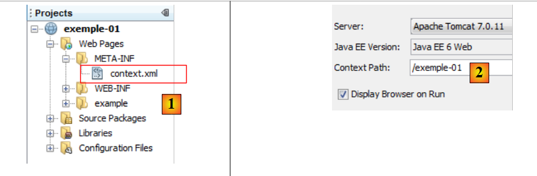
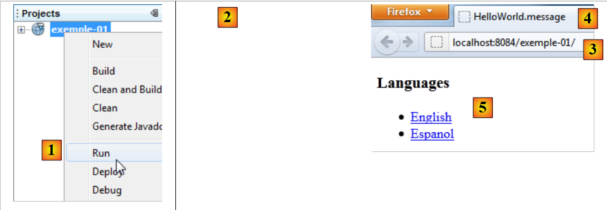

2. Um primeiro exemplo
A maioria dos nossos exemplos se limitará à camada web implementada com o Struts 2:
 |
Quando os conceitos básicos forem assimilados, estudaremos um exemplo mais complexo com uma arquitetura multicamadas.
2.1. Geração do exemplo
Vamos construir nosso primeiro aplicativo.
 |
- em [1], criamos um novo projeto
- em [2], escolhemos o tipo Java Web / Aplicação Web
- em [3], nomeamos o projeto
- em [4], indicamos o local do projeto.
- em [5], define-se o novo projeto como o projeto principal.
 |
- em [6], escolhe-se o servidor Tomcat. Na instalação do NetBeans 7.01, foram instalados dois servidores: o Apache Tomcat e o GlassFish 3.1.
- em [7], indicamos que vamos trabalhar com o framework Struts 2. É a instalação do plug-in para o Struts 2 que nos dá essa possibilidade. Sem o plug-in, o framework Struts 2 não é oferecido.
- No [8], solicita-se a criação do projeto de exemplo que iremos estudar.
- No [9], é possível verificar quais bibliotecas do Struts 2 serão utilizadas.
 |
- em [10], o projeto gerado. Voltaremos a ele.
- em [11], as bibliotecas do projeto. Elas foram integradas pelo plugin Struts 2. Caso não se disponha do plugin, essas bibliotecas podem ser encontradas na pasta [lib] da distribuição do Struts 2 baixada. Seguiremos, então, as etapas 12 e 13.
2.2. O projeto gerado no sistema de arquivos
 |
- em [1], a aba [Projects] apresenta uma visualização “de desenvolvedor” do projeto
- em [2], a aba [Files] exibe a pasta do projeto no sistema de arquivos
- em [2A], o ramo [Web Pages] é representado em [2] pela pasta [web] [2B]
- em [3A], o ramo [Source Packages] é representado em [2] pela pasta [java] [3B]
2.3. O arquivo de configuração [META-INF/context.xml]
 |
Este arquivo é o seguinte:
<?xml version="1.0" encoding="UTF-8"?>
<Context antiJARLocking="true" path="/exemple-01"/>
A linha 2 indica que o contexto do aplicativo web é /exemple-01. Todos os URL do tipo [http://machine:port/exemple-01/...] serão processados por esse aplicativo. É possível encontrar esse contexto nas propriedades do projeto [2]: clique com o botão direito do mouse no projeto / Propriedades / Executar.
2.4. O arquivo de configuração [WEB-INF/web.xml]
 |
Todo aplicativo web é configurado pelo arquivo [web.xml], localizado na pasta [WEB-INF] do aplicativo. O arquivo gerado é o seguinte:
<?xml version="1.0" encoding="UTF-8"?>
<web-app version="3.0" xmlns="http://java.sun.com/xml/ns/javaee" xmlns:xsi="http://www.w3.org/2001/XMLSchema-instance" xsi:schemaLocation="http://java.sun.com/xml/ns/javaee http://java.sun.com/xml/ns/javaee/web-app_3_0.xsd">
<filter>
<filter-name>struts2</filter-name>
<filter-class>org.apache.struts2.dispatcher.FilterDispatcher</filter-class>
</filter>
<filter-mapping>
<filter-name>struts2</filter-name>
<URL-pattern>/*</URL-pattern>
</filter-mapping>
<session-config>
<session-timeout>
30
</session-timeout>
</session-config>
<welcome-file-list>
<welcome-file>example/HelloWorld.JSP</welcome-file>
</welcome-file-list>
</web-app>
- as linhas 3 a 6 definem um filtro implementado pela classe [org.apache.struts2.dispatcher.FilterDispatcher] do Struts 2. É essa classe que desempenhará o papel do controlador C do modelo MVC.
- Linhas 7 a 10: definem uma ligação entre um modelo URL e o filtro que deve processar os URL que seguem esse modelo. Aqui, é indicado que todo URL (modelo /*) deve ser processado pelo filtro denominado struts2. Esse é o filtro definido nas linhas 3 a 6. Portanto, aqui, todos os URL passarão pelo controlador Struts 2.
- linhas 11-15: definem a duração de uma sessão do usuário, neste caso, 30 minutos. Durante as diferentes solicitações, um usuário é rastreado por um token de sessão que lhe foi atribuído na primeira solicitação e que ele envia sistematicamente a cada nova solicitação. Isso permite que o servidor web o reconheça e gerencie uma “memória” para o usuário, chamada de sessão. Se, entre duas solicitações, transcorrem mais de 30 minutos, um novo token de sessão é gerado para o usuário, que, assim, perde sua “memória” e inicia uma nova.
- linhas 16-18: definem o arquivo a ser exibido quando o usuário acessa o aplicativo web sem solicitar um documento. Assim, quando o URL solicitado for [http://machine:port/exemple-01], o URL fornecido será [http://machine:port/exemple-01/example/HelloWord.JSP].
2.5. O arquivo de configuração [struts.xml]
 |
O arquivo [struts.xml] é o arquivo de configuração do Struts 2. Ele pode estar em qualquer lugar dentro do ClassPath do projeto. No projeto NetBeans acima, o ClassPath do projeto é composto por dois ramos:
- Pacotes de código-fonte
- Bibliotecas
Qualquer pasta ou biblioteca localizada nessas duas ramificações faz, portanto, parte do ClassPath do projeto. É comum colocar o [struts.xml] no <pacote padrão>. Aqui, seu conteúdo é o seguinte:
<!DOCTYPE struts PUBLIC
"-//Apache Software Foundation//DTD Struts Configuration 2.0//EN"
"http://struts.apache.org/dtds/struts-2.0.dtd">
<struts>
<include file="example.xml"/>
<!-- Configuração para o pacote padrão. -->
<package name="default" extends="struts-default">
</package>
</struts>
- linhas 5 e 10: a tag raiz do documento é a tag <struts>
- linha 6: o arquivo [example.xml] é inserido aqui. Ele traz, portanto, sua própria configuração. Voltaremos a isso mais tarde.
- linhas 8-9: definem um pacote denominado aqui “default”. Um pacote permite configurar um grupo de ações do Struts 2 que tenham o mesmo URL. Por exemplo, [/chemin/Action1] e [/chemin/Action2]. É possível, então, definir um pacote para essas ações:
<package name="employes" namespace="/employes" extends="struts-default">
... configuration
</package>
O pacote acima é chamado de “funcionários” e configura as ações de URL e /employes/Action. O pacote pode herdar de outro pacote com a palavra-chave “extends”. Acima, o pacote employes herda do pacote struts-default. Esse pacote está localizado no arquivo [struts-default.xml] da biblioteca struts2-core.jar:
 |
O pacote “struts-default”, definido no arquivo [struts-default.xml], configura diversos aspectos, incluindo uma lista de interceptadores executados ao chamar uma ação. Voltemos à estrutura MVC de uma aplicação Struts 2:
 |
Para processar uma URL do tipo [http://machine:port/.../Action], o controlador [FilterDispatcher] instanciará a classe que implementa a ação solicitada e executará um de seus métodos; por padrão, um método chamado execute. A chamada a esse método execute passará por uma série de interceptadores:
 |
Os interceptadores e a ação processam todos a mesma solicitação. A lista de interceptadores definida no pacote struts-default é suficiente na maioria das vezes. Por isso, nossos pacotes Struts sempre estenderão o pacote struts-default. Para saber o que os diferentes interceptadores fazem, consulte o capítulo 4 do [ref2].
Voltemos ao arquivo de configuração struts.xml:
<!DOCTYPE struts PUBLIC
"-//Apache Software Foundation//DTD Struts Configuration 2.0//EN"
"http://struts.apache.org/dtds/struts-2.0.dtd">
<struts>
<include file="example.xml"/>
<!-- Configuração para o pacote padrão. -->
<package name="default" extends="struts-default">
</package>
</struts>
- linha 8: o pacote denominado default tem uma função específica. Ele processa as ações que não foram configuradas nos outros pacotes. Aqui, nas linhas 8 e 9, não há nenhuma configuração para o pacote default. Portanto, seria possível excluir a definição desse pacote.
Vejamos agora o arquivo [example.xml] incluído na linha 6 do arquivo [struts.xml]:
<?xml version="1.0" encoding="UTF-8" ?>
<!DOCTYPE struts PUBLIC
"-//Apache Software Foundation//DTD Struts Configuration 2.0//EN"
"http://struts.apache.org/dtds/struts-2.0.dtd">
<struts>
<package name="example" namespace="/example" extends="struts-default">
<action name="HelloWorld" class="example.HelloWorld">
<result>/example/HelloWorld.JSP</result>
</action>
</package>
</struts>
- linha 8: define um pacote chamado example que estende o pacote struts-default. Este pacote gerencia os URL do tipo /example/Action (namespace /example).
- linhas 9-11: definem uma ação denominada HelloWorld (atributo name), que corresponde, portanto, a URL e /example/Helloworld. Essa ação é processada por uma instância da classe example.HelloWorld (atributo class).
- O controlador [FilterDispatcher] fará com que o método execute dessa classe seja executado.
- Esse método retornará uma sequência de caracteres chamada chave de navegação.
- As diferentes chaves de navegação devem ser definidas por tags <result name="chave"/> (linha 10). Na ausência do atributo name, a chave success é usada por padrão. Esse é o caso acima. Portanto, o método execute da classe example.HelloWorld deve retornar ao controlador [FilterDispatcher] a chave success.
- O controlador [FilterDispatcher], então, exibe a página [/example/HelloWorld.JSP] (linha 10).
Se fundirmos os dois arquivos [struts.xml] e [example.xml] e excluirmos o pacote default, que parece desnecessário, tudo ocorre como se tivéssemos reduzido o arquivo [struts.xml] ao único arquivo [example.xml].
2.6. A ação HelloWorld
 |
De acordo com o arquivo [struts.xml] analisado, a ação HelloWorld é acionada quando o URL solicitado pelo cliente é /example/HelloWorld. Seu método execute é então executado. Ele deve retornar uma chave de navegação. Vimos que havia apenas uma: success e que, nesse caso, era a página /example/HelloWorld.JSP que era enviada como resposta ao usuário.
O código da ação HelloWorld é o seguinte:
- linha 5: a classe HelloWorld deriva da classe ActionSupport do Struts 2. Isso ocorre praticamente sempre. Isso permite aproveitar certos métodos, como o método getText da linha 8.
- linhas 7-10: o método execute, que é executado quando o controlador Struts é chamado. Sabemos que ele deve retornar uma sequência de caracteres, daí sua assinatura na linha 7. Aqui, ele retornará a constante SUCCESS, também definida em ActionSupport. Outras constantes são definidas da mesma forma para o resultado do método execute:
SUCCESS | "success" |
ERROR | "error" |
INPUT | "input" |
LOGIN | "login" |
Portanto, neste caso, o método execute gera a sequência success. Se considerarmos o arquivo [struts.xml], será a página /example/HelloWorld.JSP que será retornada como resposta ao usuário.
- linha 8: o método execute inicializa o campo message da linha 14 com o valor de getText(" HelloWorld.message "). O método getText pertence à classe pai ActionSupport. Ele permite recuperar um texto de um arquivo de acordo com o idioma utilizado. Por padrão, será utilizado aqui o arquivo package.properties, localizado no mesmo pacote que a ação. Esse arquivo está disponível em duas versões:
O arquivo [package.properties] é o seguinte:
Trata-se de uma sequência de linhas de texto no formato clé=valeur. Se esse arquivo for utilizado, getText("HelloWorld.message") terá como valor “Struts is up and running ...”
O arquivo [package_es.properties], por sua vez, é o seguinte:
Se o idioma utilizado pelo navegador do cliente for o espanhol (atributo es, em package_es.properties), getText("HelloWorld.message") terá como valor ¡Struts está bem! ... Em todos os outros casos, será utilizado o arquivo [package.properties].
2.7. A visualização HelloWorld.JSP
 |
Este é o último elemento do quebra-cabeça do Struts. É a vista exibida quando a solicitação para URL /example/HelloWorld é feita. Vimos por qual labirinto a solicitação inicial passou para, finalmente, exibir essa resposta. O código da página é o seguinte:
<%@ page contentType="text/html; charset=UTF-8" %>
<%@ taglib prefix="s" uri="/struts-tags" %>
<html>
<head>
<title><s:text name="HelloWorld.message"/></title>
</head>
<body>
<h2><s:property value="message"/></h2>
<h3>Languages</h3>
<ul>
<li>
<s:url id="URL" action="HelloWorld">
<s:param name="request_locale">en</s:param>
</s:url>
<s:a href="%{URL}">English</s:a>
</li>
<li>
<s:url id="URL" action="HelloWorld">
<s:param name="request_locale">es</s:param>
</s:url>
<s:a href="%{URL}">Espanol</s:a>
</li>
</ul>
</body>
</html>
- a página utiliza tags HTML (linhas 5, 6, ...) e tags de uma biblioteca definida na linha 3. Todas as tags <s:xx> pertencem a essa biblioteca.
- linha 7: a tag <s:text> permite exibir um texto diferente de acordo com o idioma do navegador do cliente. O atributo name indica a chave a ser procurada nos arquivos de mensagens. Aqui, também, serão utilizados os arquivos package_xx.properties. Vale lembrar que eles contêm apenas uma única mensagem com a chave HelloWorld.message.
- linha 11: a tag <s:property name="propriedade"> permite escrever o valor de uma propriedade de um objeto chamado ActionContext. Nesse objeto, encontramos:
- as propriedades da ação que foi executada. name="message" exibirá o valor do campo “message” da ação atual. São os métodos get e set associados ao campo que são utilizados para obter seu valor ou inicializá-lo. Portanto, esses métodos devem existir.
- os atributos da solicitação atual indicados por <s:property name="#request['clé']">
- os atributos da sessão do usuário indicados como <s:property name="#session['clé']">
- os atributos da própria aplicação, indicados como <s:property name="#application['clé']">
- os parâmetros enviados pelo navegador do cliente, indicados por <s:property name="#parameters['clé']">
- a notação <s:property name="#attr['clé']"> exibe o valor de um objeto procurado na página, na consulta, na sessão e no aplicativo, nessa ordem.
- linhas 16-18: a tag <s:url > serve para definir uma URL. O atributo id atribui um nome ao URL que será criado. Esse nome é então utilizado na linha 19. O atributo action indica para qual ação o URL deve apontar.
- linha 17: a tag <s:param ..> permite adicionar parâmetros ao URL na forma ?param1=valeur1¶m2=valeur2&.... Aqui, o parâmetro adicionado será ?request_locale=es.
No final, o URL gerado será o seguinte:
Para entender esse URL, é preciso lembrar que a página [HelloWorld.JSP] é exibida em dois casos:
- (continuação)
- mediante solicitação direta do URL [/exemple-01/example/HelloWorld.JSP]
- mediante solicitação da ação [/exemple-01/example/HelloWorld.action]
Em ambos os casos, o caminho do URL é /exemple-01/example.. A tag <s:url action= "... "> adiciona a ação definida pelo atributo action a esse caminho. Assim, obtém-se /exemplo-01/exemplo/HelloWorld. Em seguida, ela adiciona o sufixo .action ao URL anterior, bem como os parâmetros do URL, caso haja. O URL obtido /exemplo-01/exemplo/HelloWorld.action?request_locale=en chamará a ação HelloWorld definida no arquivo [struts.xml], passando o parâmetro request_locale=en. Este último não será processado pela ação HelloWorld, mas por um dos interceptadores do Struts, aquele que gerencia a internacionalização das páginas. O parâmetro request_locale será reconhecido e processado. O idioma das páginas passará a ser o inglês (en).
- linha 19: define um link HTML. O atributo href da tag <a> espera uma sequência de caracteres. Aqui, queremos usar o valor de URL, definido na linha 16 e com o id URL. Para isso, escreve-se href="%{URL}". A variável URL é avaliada e seu valor atribuído ao atributo href. Na maioria dos casos, a avaliação das variáveis é implícita. Por exemplo, quando se escreve
, é exibido o valor da propriedade message e não a sequência de caracteres "message". Mas, em outros casos, é necessário forçar a avaliação das variáveis ou propriedades. Se tivéssemos escrito href= "URL", a string URL teria sido atribuída ao atributo href.
- linhas 23-27: criam um link HTML para alterar o idioma das páginas para espanhol.
2.8. Execução do aplicativo
Iniciamos a execução do projeto:
 |
- no [1], iniciamos a execução do projeto [exemple-01]. O servidor web Tomcat é então iniciado automaticamente, caso ainda não estivesse em execução. O URL [/exemple-01] é solicitado [3]. O arquivo [web.xml] é então utilizado:
<?xml version="1.0" encoding="UTF-8"?>
<web-app version="3.0" xmlns="http://java.sun.com/xml/ns/javaee" xmlns:xsi="http://www.w3.org/2001/XMLSchema-instance" xsi:schemaLocation="http://java.sun.com/xml/ns/javaee http://java.sun.com/xml/ns/javaee/web-app_3_0.xsd">
<filter>
<filter-name>struts2</filter-name>
<filter-class>org.apache.struts2.dispatcher.FilterDispatcher</filter-class>
</filter>
<filter-mapping>
<filter-name>struts2</filter-name>
<URL-pattern>/*</URL-pattern>
</filter-mapping>
<session-config>
<session-timeout>
30
</session-timeout>
</session-config>
<welcome-file-list>
<welcome-file>example/HelloWorld.JSP</welcome-file>
</welcome-file-list>
</web-app>
- porque, no URL solicitado ([/exemple-01]), nenhuma página foi especificada; o Tomcat utilizará a tag <welcome_file-list> das linhas 16 e 18. Portanto, será servida a página URL /exemplo-01/exemplo/HelloWorld.JSP.
- Como o Struts 2 processa todas as URL (linhas 8 e 9), essa URL será filtrada pelo Struts. Como ela não corresponde a uma ação, mas a uma página JSP, esta última será exibida.
- O que vemos em [2] é, portanto, a página HelloWorld.JSP que estudamos.
- Em [4], vemos que a tag <title><s:text name="HelloWorld.message"/></title> não surtiu efeito, assim como a tag <h2><s:property value="message"/></h2>. A razão para isso é que nenhuma ação foi chamada. A lista de interceptadores que são executados antes da ação, portanto, não foi executada, especialmente aquele que gerencia a internacionalização. A tag de internacionalização <s:text ...> não pôde ser processada corretamente. Além disso, a propriedade message, que faz referência ao campo message da classe Action1, não existe. Daí a ausência de exibição.
Agora, vamos acessar o link [English]. Obtemos a seguinte página:
 |
- em [1], o URL solicitado. Já explicamos a formação desse URL. Desta vez, uma ação Struts é solicitada: a ação HelloWorld definida em [example.xml].
<struts>
<package name="example" namespace="/example" extends="struts-default">
<action name="HelloWorld" class="example.HelloWorld">
<result>/example/HelloWorld.JSP</result>
</action>
</package>
</struts>
- o método execute dessa ação foi executado. Vimos que ela retornava a chave success. A partir da linha 4 acima, deduzimos que a página /example/HelloWorld.JSP é retornada como resposta ao cliente. É isso que vemos em [3].
- Em [1], vemos que a página URL solicitada é configurada pelo parâmetro request_locale=en. O idioma das páginas passará a ser o inglês. De fato, essa escolha de idioma é armazenada na sessão do usuário, que manterá essa escolha até que a altere.
- Nos códigos [2] e [3], vemos a internacionalização em ação. As tags <title><s:text name="HelloWorld.message"/></title> e <h2><s:property value="message"/></h2> produziram, desta vez, o efeito desejado.
Se selecionarmos agora o link [Espanol], obteremos a página em espanhol:
 |
2.9. Conclusion
Analisamos um exemplo gerado automaticamente pelo plugin Struts 2 para o NetBeans. Constatamos que era bastante difícil acompanhar o processamento de uma solicitação. Os seguintes elementos estão envolvidos:
- a configuração [web.xml], [struts.xml]
- a ação executada: interceptadores e o método execute.
No início, a mecânica do Struts 2 pode parecer complexa. Leva um pouco de tempo para se acostumar. Apresentaremos agora uma série de exemplos que esclarecem, cada um, um ponto específico do Struts.